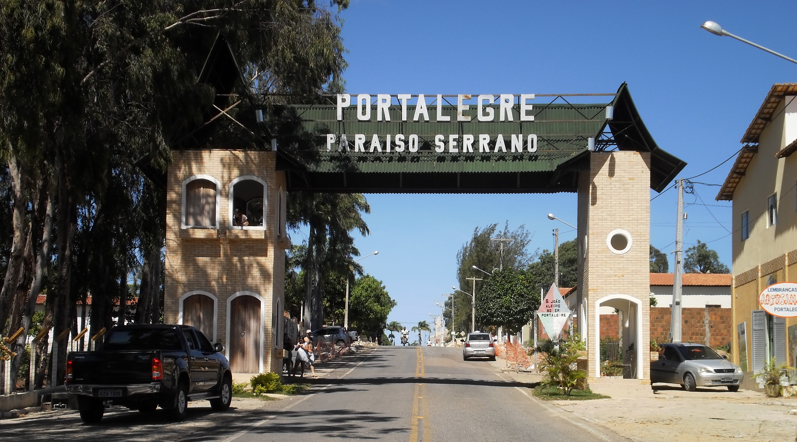
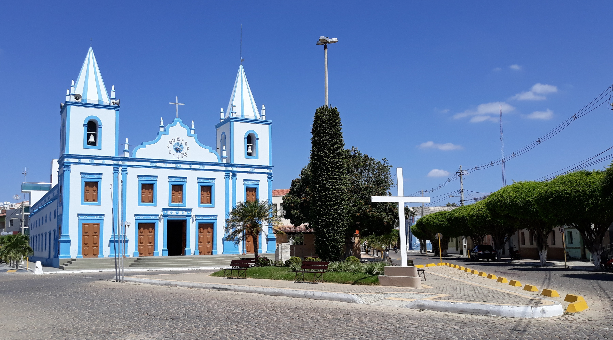

Portalegre

Conhecida popularmente como paraíso serrano devido as suas inúmeras belezas
naturais, Portalegre teve seu surgimento registrádo final do Século XVII
através do avanço de currais de gado, durante o ciclo econômico da carne do
charque, que se estendiam até a várzea do rio Açu/Apodi. O Capitão-mor Manoel
Nogueira Ferreira ergueu a primeira fazenda do município pela necessidade de
procurar paz e tranquilidade, subindo então para a serra. A terra foi demarcada
com uma tora de madeira (dormentes).
Ler mais
Martins

Em 20 de julho de 1736, Aleixo Teixeira, capitão-mor da Aldeia de
São João do Apodi dos Tapuias Paiacus (atual Apodi), recebeu a
carta de data da sesmaria de terras no alto da serra conhecida
como Serra do Campo Grande (assim chamada em virtude da proximidade
da povoação de Campo Grande), posteriormente conhecida como Serra
da Conceição. Seis anos depois, Francisco Martins Roriz, habitante
da Ribeira do Jaguaribe, na capitania do Ceará-Grande, fundou, no
alto da serra, uma capela, dedicada à Nossa Senhora da Conceição
(atual Igreja do Rosário), tomando posse daquelas terras situadas
entre os rios Apodi/Mossoró e Umari. Saber mais.